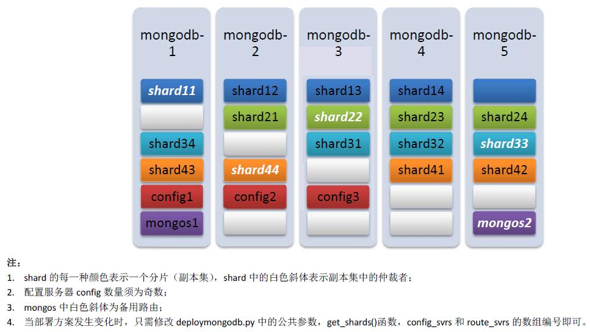

Mongodb集群部署
Mongodb集群搭建还是比较容易的一件事，只是操作稍显繁琐，有很多重复性劳动。由于官方没有发布集群配置工具，只能手动配置每一台服务器，为了节省时间和不必要的重复工作，这里给出一个一键操作Mongodb集群的方法和相应的脚本程序。
1. 集群环境设置
为了方便在集群多机条件下部署操作，需要为一些远程操作提供便利的系统和网络环境，例如集群机器的统一命名，ssh免登录认证，集群时统等等。假设我们要搭建一个5台机器组成的Mongodb数据库集群，我们选择Linux平台来部署集群，因为Mongodb在Linux上运行得比Windows平台上更稳定。
1.0 集群规划
当Mongodb数据库集群配置成一个分片+副本集的部署方案时，整个集群节点之间并没有主次之分，各节点完成相应角色任务即可。因此，我们给5台主机编号为mongodb-[1~5]，后续操作如无特别说明，均在mongodb-1主机上完成。
1.1 添加IP-主机名映射
向/etc/hosts文件中添加IP-主机名映射表
10.0.0.1 mongodb-1
10.0.0.2 mongodb-2
...
10.0.0.5 mongodb-5
这样在mongodb-1上可以直接通过主机名连接其余各台主机。
1.2 设置ssh免登录环境
执行ssh-keygen -t rsa，均采用默认设置，两次回车后在~/.ssh/路径下生成密钥，执行sshcopyidbat.sh向mongodb-[2~5]拷贝密钥，这个过程中需要输入各主机的登录密码。拷贝完成后，再从mongodb-1登录其余主机就不需要密码了。
1.3 设置主机名
1.4 拷贝文件
设置脚本copyfiles.sh中需要传输的文件，执行脚本向各主机拷贝/etc/hosts和mongodb的安装包，其中拷贝mongodb-linux-xxx.tar.gz文件时，会把mongdb的程序拷贝到/usr/bin/目录下，这样在命令行中就可直接调用mongodb的相关命令。
1.5 挂载磁盘
这是可选步骤，如果规划有专门的磁盘作为数据库存储空间，执行mountdisk.sh即完成各主机的磁盘格式化和挂载任务。当然，具体挂载的情况和挂载位置都可以通过修改脚本mountdisk.sh来设置。
2. Mongodb数据库集群设置
设置好集群环境，后面的事情就好说了，执行deploymongodbcluster.py，会有四个操作选项：
1. 部署集群
2. 启动集群
3. 停止集群
4. 删除集群
选项1对应于尚未部署过的集群环境，脚本会按预先配置自动完成分片服务器的启动，配置服务器的启动，在配置服务器中设置好副本集，路由服务器的启动，以及数据库集群运维程序的后台运行。在这一过程中，会在指定位置新建文件夹用于存储分片、配置、路由服务器的数据、日志等文件，所有程序启动均已后台方式运行，开启日志功能。集群部署的具体配置，可以通过修改deploymongodbcluster.py脚本的头部常量来定制，分片的部署方案可以通过修改脚本中get_shards()函数来自定义。本案例的分片部署如下图所示：

执行选项1,可以完成整个集群的部署和启动，因此不用再执行选项2,按脚本提示执行程序后会自动退出。
选项2和3对应于已经部署过的集群，完成集群的启动和停止，其中停止用pkill -2 mongo实现。启动和停止均不会对已有的数据库文件进行磁盘操作。
选项4会删除已经部署过的数据库集群的所有文件和文件夹，清空所有磁盘数据，所以执行此项一定要慎重。
当然，要使四个选项相互之间能够关联执行，需要保证其部署方案是一致的，在脚本中定义好的配置，一般不用再去更改。需要指出的是，本脚本没有使用配置文件的方式启动各数据库服务器，而是通过自动生成的命令在命令行中直接启动，各命令参数在脚本的常量字段中可设。
3. Mongodb数据库运维
在集群启动的最后，即路由服务器启动完成之后，脚本会提示是否启动MongodbMaintainer，目前该运维程序只完成数据库容量的定时监测，当数据库容量达到预警上限（本案例中设为总存储容量的80%），开始启动历史数据删除，直至数据库容量降至预警门限以下。
具体的运维策略可根据实际应用定制，例如按保存天数删除数据，按热度删除数据，按重要性删除数据等等。至于集群运行状态监测，可通过调用mongostat查看，集群的负载状态以及数据均衡可以通过处理相应的日志文件得到，这些功能都还有待增加，如果需要的话。
4. 集群性能测试
执行benchmarkmongodb.py，有两个测试方案，插入一百万条记录，测试写入性能，和插入、查询同时测试，其中插入和查询的数据量比例可设置。